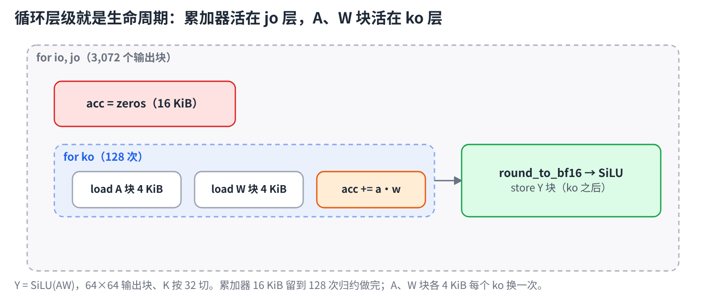
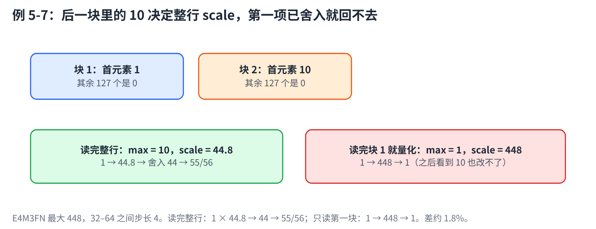
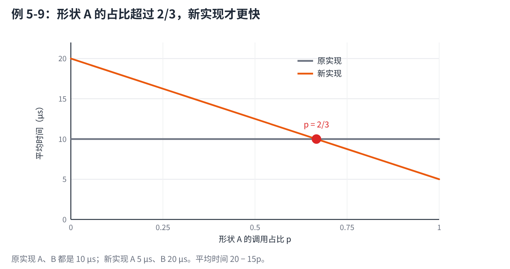
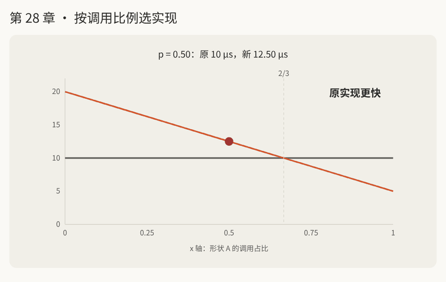

第 28 章 · 编译器：表达、变换与选择
本地运行
git clone https://github.com/wikieden/ai-infra-from-constraints
cd ai-infra-from-constraints/code/notebooks
pip install jupyterlab torch numpy
jupyter lab ch28_compiler.ipynb也可以下载后直接用 VS Code 打开 .ipynb 运行。需要 GPU 的章节在 Colab 里选「代码执行程序 → 更改运行时类型 → GPU」。
本章回答：融合和分块的选择为什么多到要交给编译器？split、reorder、compute_at 分别在改什么？哪些变换看起来省事却会改变结果？候选那么多，编译器怎么挑，又该按什么负载挑？
讲解日期：2026-11-24 · 上一章：第 27 章 算子融合与 FlashAttention · 下一章：第 29 章 运行时：重叠、CUDA Graph 与动态形状
对应原文：materials/ai-infra-book/manuscripts/05-算子与运行时.md§5.4 L481–L569、L732–L767（例 5-7、5-9，图 5-21 到 5-25）；§5.4.4 AKG（L570–L691）、§5.4.5 TileLang-Ascend（L692–L731）本章跳过
本章缩写：E4M3FN = 4 位指数、3 位尾数的 8 位浮点（FN = finite，无无穷大，最大 448）· TVM = Tensor Virtual Machine（张量 / 虚拟 / 机器，开源张量编译器）· AKG = Auto Kernel Generator（自动 / kernel / 生成器，华为）· isl = Integer Set Library（整数 / 集合 / 库，多面体编译的基础库）。全部缩写见 缩写与术语表
第 26、27 章是手工选：块多大、循环怎么排、哪几个算子合成一个 kernel。本章看编译器怎么把同样的选择写成程序、检查合法、比较成本。
讲解
第一步：候选为什么多到要比较（2026-11-24）
类比：搬家装车。 箱子怎么分组、哪几箱一起搬、装车顺序怎么排，组合多得数不过来；而且一组装得多，车里能放别的东西就少了。
原文 L487–L491：SiLU → 乘 → 量化三步，两条相邻边界可切可不切，\(2^2 = 4\) 种划分；一条 10 个算子的链有 \(2^9 = 512\) 种。每种还能再选块大小、局部布局、流水深度。选择之间互相影响：合并两步省掉写回，但同时要保存的值变多，可用的块大小就变了。
编译器分三步做：
- 把运算写成循环和数组访问（谁读谁写一清二楚）；
- 按读写依赖和数值规则检查哪些变换合法；
- 结合容量和实测时间比较成本。
一句话：只记一个算子名推不出代价；要同时表达算什么、按什么顺序、数据放哪。
第二步：用循环变换写出分块和融合（2026-11-24）
类比：改作业顺序。 同样一摞卷子，先按班级分堆（split），再把"一个班批完再换下一班"排到外层（reorder），最后决定"批完一个班就登分"还是"全部批完再登"（compute_at）。
原文 L497–L542，\(Y = \operatorname{SiLU}(AW)\)，FP32 累加，舍入成 BF16 后再激活：
- split：\(i = 64 i_o + i_i\)，1024 行成 16 块；j 同样成 192 块；K 按 32 拆成 128 个归约块。
- reorder：外层遍历输出块，内层遍历块内元素，选定一个 tile 后沿 ko 逐块累加。
- 生命周期：A、W 当前块各 4 KiB，每个 ko 后就能换；4096 个 FP32 累加器 16 KiB，要留到 128 次归约都做完。两类缓冲在不同循环层分配和释放。
- compute_at：一个输出 tile 归约完，它的 C 就全算好了，立刻做 SiLU 写出 Y，不需要完整的 24 MiB C，省掉 48 MiB 写读。
for io in range(ceil_div(M, BM)):
for jo in range(ceil_div(N, BN)):
acc = zeros_fp32(BM, BN) # 活到整个 ko 循环结束
for ko in range(ceil_div(K, BK)):
a = load_tile(A, io, ko, BM, BK) # 每个 ko 换一次
w = load_tile(W, ko, jo, BK, BN)
matmul_accumulate(acc, a, w)
c = round_to_bf16(acc) # 舍入保留
store_tile(Y, io, jo, silu(c)) # 激活放在归约之后

图 28-1 · 缩进就是生命周期。
Halide 和 TVM 把"算什么"（compute）和"怎么算"（schedule）分开写，compute_at 指定生产者在消费者的哪一层循环里执行。计算位置同时决定复用还是重算：放外层先算完整结果供大家读；放进消费者的分块循环只算当前要的，但多个块要同一部分时就重复算。fuse 把多个循环维合成一维，比如 16×192 个输出块编号成 0–3071 分给工作组。
补基础：tile 级 DSL 见《CUDA 从线程到 Tensor Core》第 24 章；Inductor 生成的代码见《PyTorch 从里到外》第 31 章。
一句话：split 切块、reorder 定先后、compute_at 定中间结果在哪层生成和释放；循环结构就是数据的生命周期。
第三步：哪些变换会改结果（2026-11-24）
类比：先汇总再打折 vs 先打折再汇总。 满 100 减 20 的优惠，按总价算和按每件算，结果不一样；顺序本身就是规则的一部分。
激活不能挪到归约前面（原文 L546–L552）：两个部分和 1、−1，完整和 0，\(\operatorname{SiLU}(0) = 0\)；先激活再相加 \(\operatorname{SiLU}(1) + \operatorname{SiLU}(-1) \approx 0.4621\)。不同输出可以并行；同一输出的归约和它的后续运算必须按依赖顺序。
分块归约要带够统计量（原文 L554）：FlashAttention 能逐块算，是因为带着 \(m\)、\(\ell\)、\(u\)（第 27 章）。只保留每块归一化后的输出（比如 1 和 3），就判断不出整行该给它们 1 : 2 还是 2 : 1 的权重。
舍入位置要保留（原文 L556）：原程序先舍入到 BF16 再激活，融合后也要在激活前 round_to_bf16。存放位置（寄存器还是显存）和数值格式是两件独立的事。
例 5-7：整行 scale 决定能不能边读边量化（原文 L558–L566）：一行 256 个元素分两块，两块首元素分别是 1 和 10，其余为 0；E4M3FN，最大 448，scale 由整行最大绝对值定。
| 做法 | 第一项映射 | 舍入 | 反量化 |
|---|---|---|---|
| 读完整行（max = 10） | \(1 \times 448/10 = 44.8\) | 44 | \(44 \times 10/448 = 55/56\) |
| 读完第一块就量化（max = 1） | 448 | 448 | 1 |

图 28-2 · 差 \(1/56 \approx 1.8\%\)。按整行最大值定 scale 时，必须先读完一行再量化。
一句话：输出之间可以换顺序、输入可以分块缓存；归约怎么合并、在哪里舍入，属于运算的定义，变换不能动。
第四步：先排除，再估计，最后实测（2026-11-24）
类比：招聘。 先按硬条件筛简历（放不放得下），再看笔试分数排面试顺序（估算），最后面试决定（实测）；而且要按岗位实际要做的活来面试（负载分布）。
选择流程（原文 L734–L746）：
| 步骤 | 要填的 | 依据 |
|---|---|---|
| 固定目标 | 形状、精度、误差、调用频数 | 比较同一项工作、同一负载 |
| 列候选 | tile、循环次序、缓冲数、融合范围 | 编译器和硬件支持什么 |
| 查可行 | 共享内存、寄存器、线程、对齐、依赖 | 资源报告、正确性检查 |
| 估时间 | 计算量、实际读写、启动、布局转换 | 各资源时间与关键路径 |
| 实测选择 | 代表形状的时间、波动、完整算子链 | 负载总成本最低，保留相近候选 |
例：第 26 章的 24 KiB / 80 KiB 两个候选改成双缓冲后是 32 / 96 KiB，RTX PRO 6000 每 SM 驻留从 4 / 1 块变成 3 / 1 块。共享内存和寄存器是两类容量，不能互借。实测例子：同一个转置程序 16×16 块约 7.9 μs，32×32 块约 2.9 μs（约 2.7 倍）。TVM 自动调优按实测搜索调度；能调编译和测试工具的 Agent 还能尝试模板之外的写法。都要先过数值检查，再比时间，而且评的是编译后的程序（编译器可能已经把源码里分开写的算子融合了）。
例 5-9：按什么负载评（原文 L752–L760）：某算子有 A、B 两种输入形状，原实现都是 10 μs；新实现 A 5 μs、B 20 μs。
- 各调一次：20 → 25 μs，变慢 25%；
- A 100 次、B 1 次：1010 → 520 μs，快约 1.9 倍。
A 的调用占比为 \(p\)：

图 28-3 · 也可以按形状分别选实现；搜索本身花的编译和测量时间是准备成本（第 29 章算回本）。
场景代码：Triton 的 autotune 按实测从候选配置里挑，key 指定按哪些形状参数分别挑（真实 API）：
import triton
import triton.language as tl
@triton.autotune(
configs=[triton.Config({"BM": 64, "BN": 64}, num_stages=3),
triton.Config({"BM": 128, "BN": 128}, num_stages=2)],
key=["M", "N", "K"], # 形状变了才重新测
)
@triton.jit
def matmul_kernel(a, b, c, M, N, K, BM: tl.constexpr, BN: tl.constexpr):
...
一句话：编译器先用依赖和容量排除，再用估算排顺序，最后按真实调用分布实测选；一个形状上的加速可能是另一个形状上的减速。
动画演示：按调用比例选实现

可交互版：animations/28-compiler.html（滑块：形状 A 的调用占比 0–1；按形状分别选择的开关）。
怎么看：
- 横轴是形状 A 的调用占比 \(p\)，两条线是原实现（10 μs 水平线）和新实现 \(20 - 15p\)（第四步）；
- 红点是当前 \(p\)，右边显示两种实现的平均时间和哪个更快；
- 打开"按形状选"，A 用新实现、B 用原实现：平均时间 \(5p + 10(1-p)\)，任何 \(p\) 都不比原来差；
- 播放时 \(p\) = 0.5 → 2/3 → 0.99，最后打开按形状选。
练习与作答记录
题 1（第一步）：一条 6 个算子的链，每条相邻边界可切可不切，有多少种划分？如果第 3、4 个算子之间有一次整行归约、必须切开，还剩多少种？
作答记录：（待作答）
题 2（第三步）：E4M3FN（最大 448）。一行两块，首元素分别是 3 和 12，其余为 0。读完整行再量化，第一项反量化后是多少？读完第一块就量化又是多少？（提示：64–128 之间步长 8。）
作答记录：（待作答）
题 3（第四步）：原实现 A、B 都是 12 μs；新实现 A 4 μs、B 30 μs。A 占比至少多少新实现才更快？若按形状分别选择要多花 1 μs 判断，A 占比 0.5 时三种做法各平均多少？
作答记录：（待作答）
原书实验 5-4、5-5、5-6（L1001、L1005、L1009）。想多练可以做。
口诀
箱子怎么分组怎么装，组合多到只能比；
切块、换序、定在哪层算，缩进就是寿命；
先汇总再打折，顺序是规则的一部分；整行最大值没读到，量化别动手；
先筛硬条件，再估分，最后按真实活计面试。
本章复习卡片
I109（split / reorder / compute_at 与临时数据的生命周期）、I110（不能动的：归约合并、舍入位置、例 5-7 的整行 scale）、I111（选择流程与例 5-9 的 \(p > 2/3\)）。练习做完后，按答错、卡住的地方再补。
附录 · 延伸阅读
留给以后深入学习用，不影响本章主线。★ 是建议先读的。
推荐阅读
| 读什么 | 读哪里 | 读它为了什么 |
|---|---|---|
| ★ AII 第 5 章 | §5.4 L481–L569、L732–L767 | 本章原文 |
| AII 第 5 章 | §5.4.4–§5.4.5 L570–L731 | 本章跳过的 AKG 多面体调度、TileLang-Ascend |
| Ragan-Kelley 等，Halide（PLDI 2013） | §3–§4 | compute / schedule 分离 |
| Chen 等，TVM（OSDI 2018） | §4–§5 | 调度原语与自动调优 |
| 《CUDA 从线程到 Tensor Core》第 24、25 章 | tile DSL、编译部署 | Triton / TileLang 一侧 |
| 《PyTorch 从里到外》第 6、31、32 章 | 编译栈、Inductor、Triton 模型 | 框架里的编译器 |
数学原理
- 组合计数：\(n\) 个算子、\(n - 1\) 条边界，\(2^{n-1}\) 种划分。
- 非线性不交换：\(f(a + b) \ne f(a) + f(b)\)。
- 舍入不可逆：舍入后的值丢了信息，后面再换 scale 也补不回来。
- 期望成本：按调用占比加权平均；两条直线交点给阈值。
公式清单
| 公式 | 意思 |
|---|---|
| 划分数 \(= 2^{n-1}\) | 融合边界的组合 |
| \(\operatorname{SiLU}(1) + \operatorname{SiLU}(-1) \approx 0.4621 \ne \operatorname{SiLU}(0)\) | 激活不能挪到归约前 |
| \(q = \operatorname{round}(x \cdot 448/\max\lvert x \rvert)\) | 整行 scale 量化 |
| \(\overline{T}_{\mathrm{new}} = 5p + 20(1-p)\)，\(p > 2/3\) | 例 5-9 |
代码对照：把本章的数字用代码算一遍
纯 Python，不需要 GPU。代码在仓库本地
ai-infra/solutions/chapter-code/ch28_compiler.py，配套测试tests/test_ch28.py：
bash cd ai-infra/solutions/chapter-code uv run python ch28_compiler.py # 一步一步打印 uv run pytest tests/test_ch28.py
讲义 ↔ 代码：
| 讲义 | 公式 | 写法 | 跑出来 |
|---|---|---|---|
| 第一步 划分 | \(2^{n-1}\) | partitions(10) |
512 |
| 第三步 次序 | silu(1) + silu(-1) |
0.4621 | |
| 第三步 例 5-7 | E4M3 舍入 | quantize_first(1, 10)、quantize_first(1, 1) |
55/56、1 |
| 第四步 驻留 | 100 KB ÷（工作集 + 1 KiB） | resident(32)、resident(96) |
3 / 1 |
| 第四步 例 5-9 | \(20 - 15p\) | mix_time(p) |
\(p > 2/3\) |
关键几行：
def e4m3_round(x):
e = max(math.floor(math.log2(x)), -6) # 所在的二进制区间
step = 2.0 ** (e - 3) # 3 位尾数：每个区间 8 个刻度
... # 就近取偶
代码里才看得到的 3 件事：
- E4M3 在 32–64 之间步长是 4，所以 44.8 落在 44 和 48 之间、舍入到 44。
- 指数下限 −6 对应次正规数区间；这里的例子用不到，但
e4m3_round(0.3)能看到步长变成 1/32。 mix_time(2/3)正好等于 10：交点在浮点里也是精确的（\(20 - 15 \times 2/3 = 10\)）。
自己改一改（不影响练习答案）：
- 给
quantize_first加"每 32 个元素一组 scale"的版本，例 5-7 的两块各自定 scale，误差还有吗？ - 把例 5-9 推广成三种形状，写出新实现更快的条件。
- 用
partitions加约束：哪些边界必须切（归约、整行 scale），数一数剩下多少种。